Below are (or will be) entries for my work for WolverineSoft Studio's Winter 2023 Project.
Week 1 (Jan 15 - Jan 21)
Setup and onboarding tasks
Setup included getting SourceTree set up and running as my Git client, as well as getting my Jira/Confluence/BitBucket account.
As part of the programming team onboarding, we were to also implement either a console command or achievement.
I implemented a console command to obtain the contents of the player inventory, and successfully created my first pull request for the project.
Weeks 2 & 3 (Jan 22 - Feb 4)
Week 2 - Basic HUD:
| Category |
Time |
| Meetings and logistics: |
3 h |
| Documentation, planning, and testing: |
3 h |
| Development: |
8 h |
| Total |
14 h |
For the second week, I started working on the main HUD, specifically on health bar modifications and a few general UI scripts.
I spent an hour or so looking through the UI design documentation, as well as looking through the existing codebase to see what I was working off of.
A placeholder health bar display object was already in place, to which I added threshold and corresponding color parameters to better indicate low player health in another hour.
I then created a general UI fade, lerp, and shake scripts.
Testing out different methods to create a shaking healthbar on hit would overall be a needless timesink in hindsight, as I spent around 3-4 hours testing out different methods.
The lerp and shake scripts were the end results of testing different methods to produce the health shake effect.
I would also try to test out Mathf.PingPong(), but that turned out to not work as well as the Lerp and shake implementation.
The final "shake" script utilzed Hooke's Law, the application of which I learned from EECS 494. For the shake script, I also created the corresponding Unity event and listener.
The UI fade ended up taking about an hour, and an overall much better utilization of time.
Screenshots:
Health fade and health thresholds
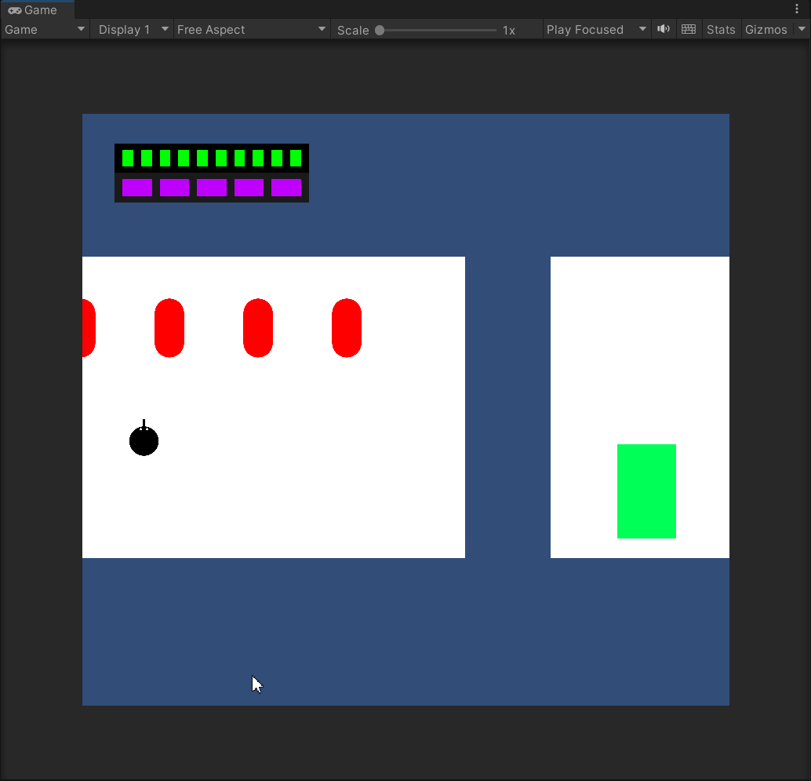
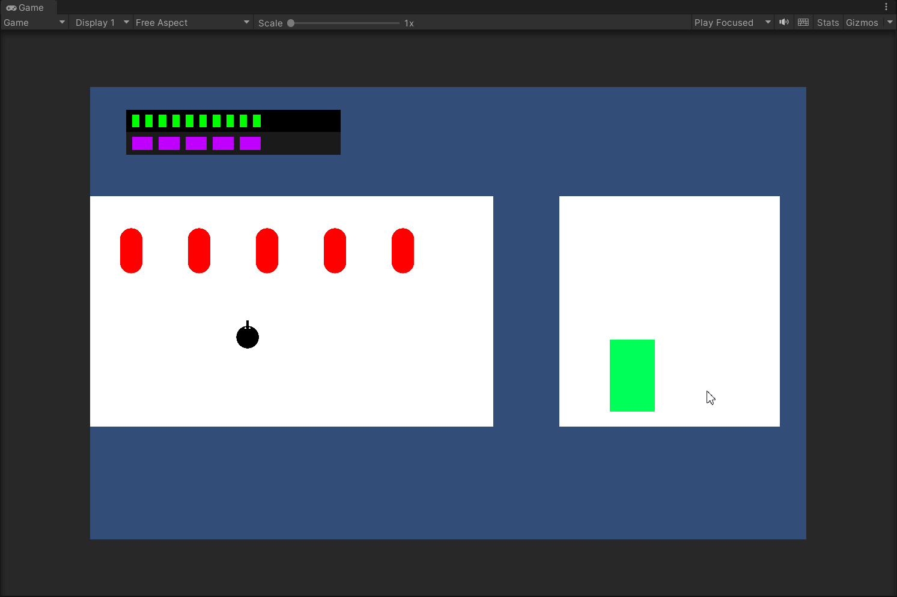
Week 3 - HUD additions and fixes, Weapon UI:
| Category |
Time |
| Meetings and logistics: |
3 h |
| Documentation, planning, and testing: |
2 h 30 m |
| Development: |
6 h |
| Bugfixing: |
2 h |
| Total |
13 h 30 m |
For the third week, I updated and made additions to main HUD features from week 2, created a basic title scene, as well as implemented an initial weapon UI display.
To start, I updated a the lerp and fade scripts from week 2 to work as callback functions for future events, taking about 30 minutes including consulting my programming lead.
I then updated the health bar display to work with the new shield system, as well create a shield UI display.
The shield UI display also included creating a Unity event and listener to update shield UI when it regenerates or decreases.
I then went about to creating a stamina bar, which was an UI element that was to be attached to the player object, and thus relative to the player's position on the screen.
This was done by making a UI canvas that was a child to the player object.
The shields and stamina would take about an hour each, for two hours total between the two.
I then worked on the title scene, of which most of the two hours developing was spent relearning how buttons and onclick functionality worked in Unity.
A main menu and placeholders for submenus (e.g. settings and credits) was created for this initial title screen.
Finally, I created the weapon UI display, which would turn out to be two sibling displays for melee and ranged weapons respectively.
About 1.5 hours was spent looking into the design specifications and looking into how the weapon UI looked in Hyper Light Drift.
I then spent about 1.5 hours creating the initial melee weapon UI.
Another 1.5 hours was spent on refining some issues, such as display layer priority, as well as implementing a corresponding ranged weapon UI.
My build notably did encounter a few issues during the weapon UI development, and led to me having to reset my progress a few times.
The player would not be able to move during playtesting, and would not load in a default weapon to test the weapon UI with.
After consulting my programming lead and creating a new branch, I managed to get the weapon UI working again but it stil ate up aobut 2 hours here.
I then spent about 30 minutes readjusting the UI after merging in from the master to minimize bugs when merging, and made my final feature pull request for the sprint.
Screenshots:
Shield and stamina bars:
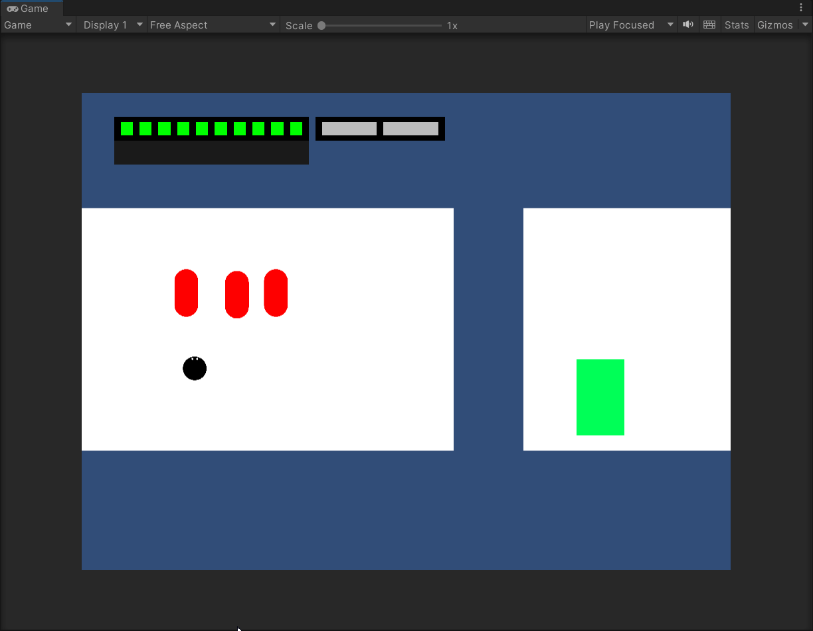
Title screen:
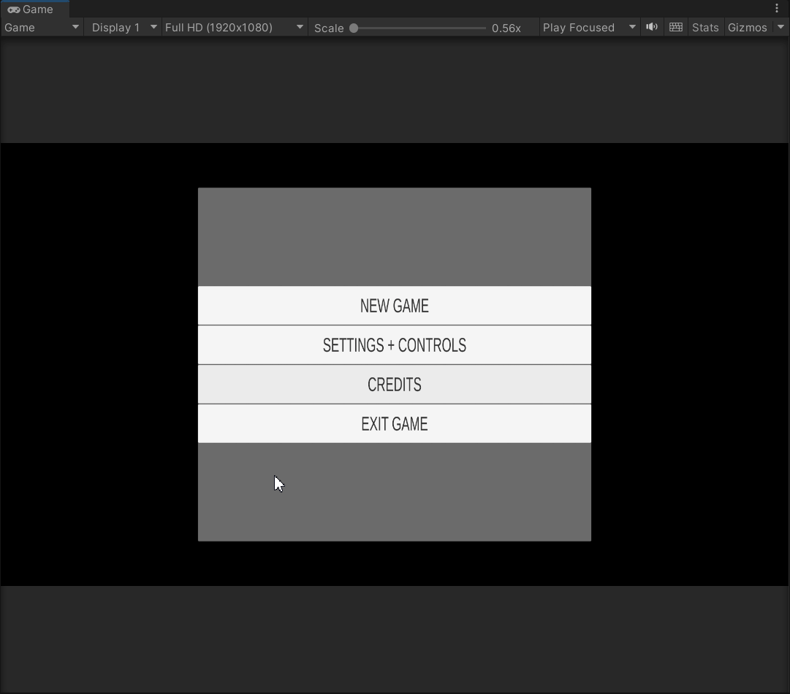
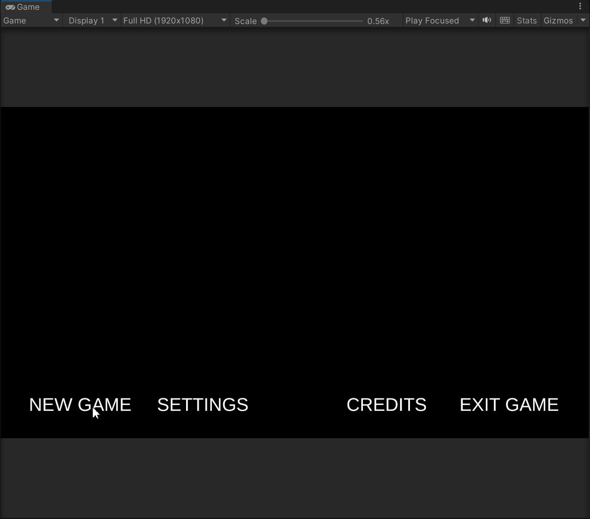
Weapon UI:
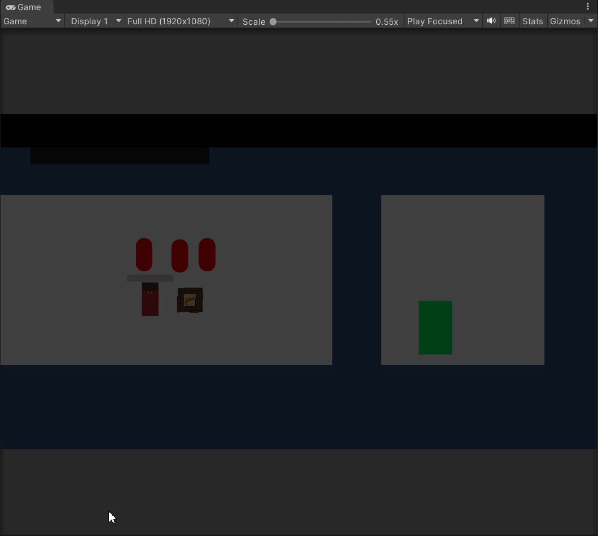
Total time: 27 h 30 m
Weeks 4 & 5 (Feb 5 - Feb 18)
Week 4 - Sprint 1 QA:
| Category |
Time |
| Meetings and logistics: |
2 h |
| Development: |
2 h |
| Bugfixing: |
7 h 30 m |
| Total |
11 h 30 m |
Week 4 was the last week of the first sprint, which served as a QA week to fix bugs.
Notable bugs I fixed during this week include fixing UI layering for UI elements,
image scaling issues with the health and shield bar icons,
and updated the underlying model of the ranged weapon UI.
Other tasks included fixing features that did that get merged correctly to the master branch,
adjusting HUD elements to design changes,
making the pause menu actually pause in-game time,
as well as working to ensure movement settings on the title screen can be adjusted and retained across scenes.
Screenshots:
HUD Overlay fix
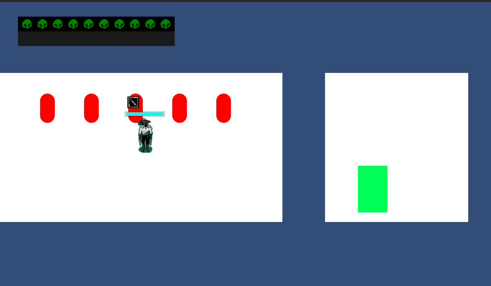
Repositioned Stamina Bar
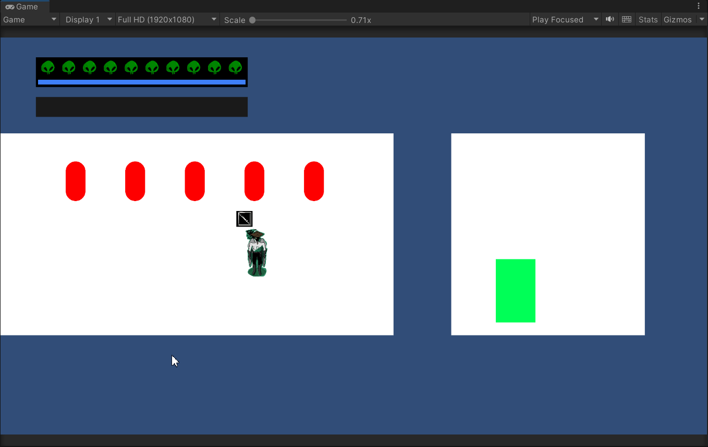
Week 5 - Mentor Playtesting & UI Overhaul:
| Category |
Time |
| Meetings and logistics: |
3 h |
| Documentation, planning, and testing: |
1 h |
| Development: |
8 h 30 m |
| Total |
12 h 30 m |
In Week 5, I attended one the studio's first mentor playtest and feedback sessions by Matt Rader from Serenity Forge.
Notable UI feedback were how the normally inactive HUD impacted the playthough by making it hard to tell stamina and ammo levels,
aiming inaccuracies,
the inconsistency between an ammo HUD that afforded moreso discrete ammo amounts rather than fractional values.
The lack of enemy UI and a lack of a "quit-to-title" option through the pause menu.
In terms of the tasks I completed this week,
I again overhauled the weapon UI,
this time entirely removing the ranged weapon UI and revamping the melee weapon UI.
Specifically, the melee weapon UI is to show all possible options, and show the currently active option.
The pause menu option to quit to title or desktop was also implemented this week,
opening an additional submenu to allow the player to quit to title, quit the game, or just close the pause menu again using the ESC button.
Work was also done on the boss health bar and interactable UI.
Screenshots:
New weapon UI:
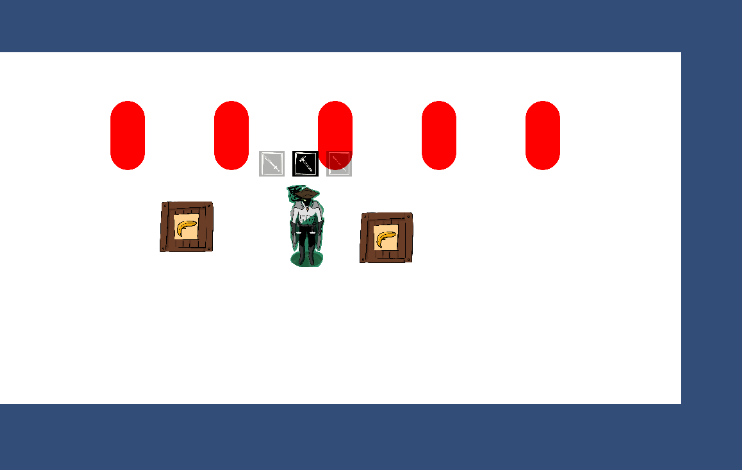
Boss Health Bar:
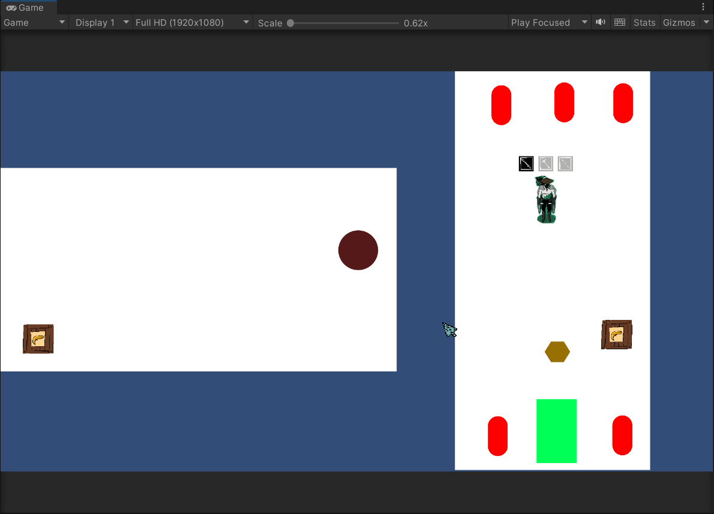
Interactable UI:
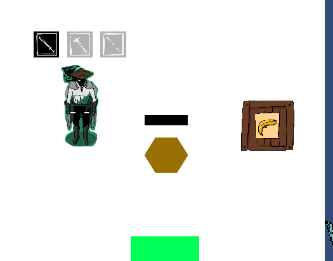
Total time: 24 h
Weeks 6, 7, & 8 (Feb 19 - Feb 25, Mar 5 - Mar 18)
Week 6 - Mentor Playtesting & More Weapon UI Overhaul:
| Category |
Time |
| Meetings and logistics: |
4 h |
| Development: |
7 h |
| Bugfixing: |
30 m |
| Total |
11 h 30 m |
Week 6 was the last week of the second sprint, where I worked primarily with implementing an updated melee weapon HUD to account for the removal of one of the three melee weapons from the game.
The weapon UI was made to account for the finalized weapon system, consisting of a primary and secondary weapon, where the primary weapon was to be the active weapon.
Sprites were directly added to the individual weapons to allow for ease of reference when updating the weapon UI sprites.
A few other features that I would add would be a popup that was to appear on currency gains, a simple enemy healthbar attached to all existing non-boss enemies, as well got the previous interactble UI working with the new interaction system implemented by Jasmine, a fellow programming member.
The interaction UI progress bar of note would be integrated by Brandon, also from programming, for a further improved interaction system that gave the designers more flexibility of implementation.
This was one of the few times I was able to interact with other programming members on a feature I implemented, and it was pretty fulfilling participating the process of making the interaction system come to life.
I also attended two more mentor sessions this week: a playtest session with WSoft alumni Grace Ma, and a programming mentoring session with Matt Rader.
The playtest session provided feedback moreso valuable for the art and design department, but did give valuable insight as to how well the previous week's UI implementation worked.
The suggestion for audio settings was also mentioned here, and would be added in a later week. The mentorship session provided valuable insight on how to plan out portfolio and resume entries for projects.
A few recommendations were also given on valuable skills to pickup, one of which was to get experience on tools programming.
Screenshots:
Melee Weapon UI Overhaul
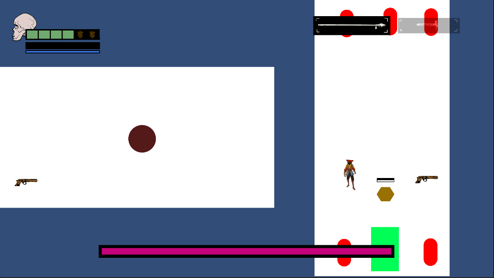
Enemy Health Bar
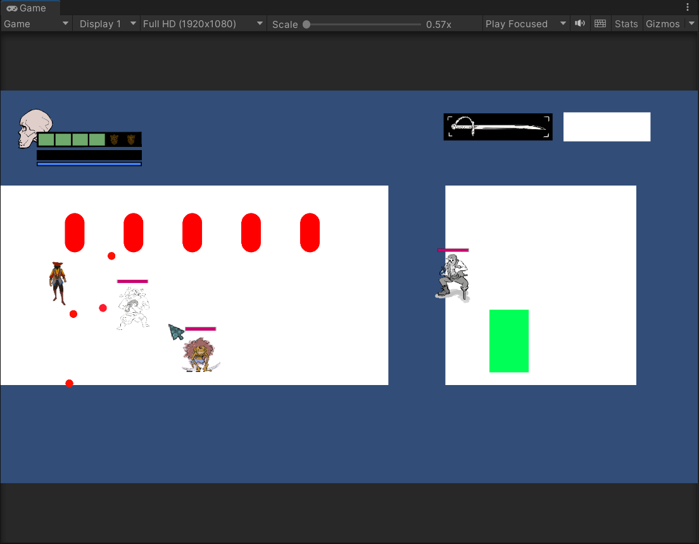
Currency Popup
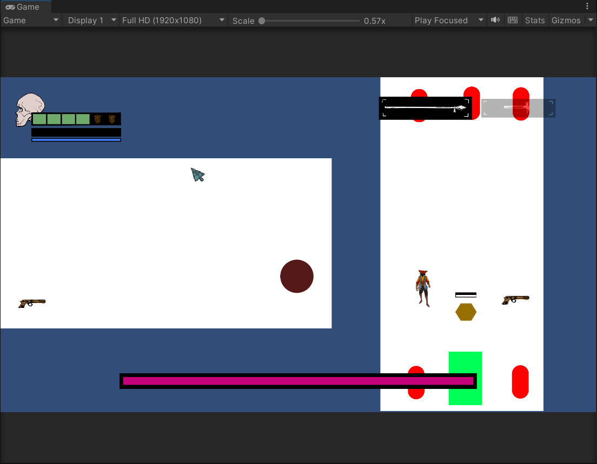
Interaction Progress Bar
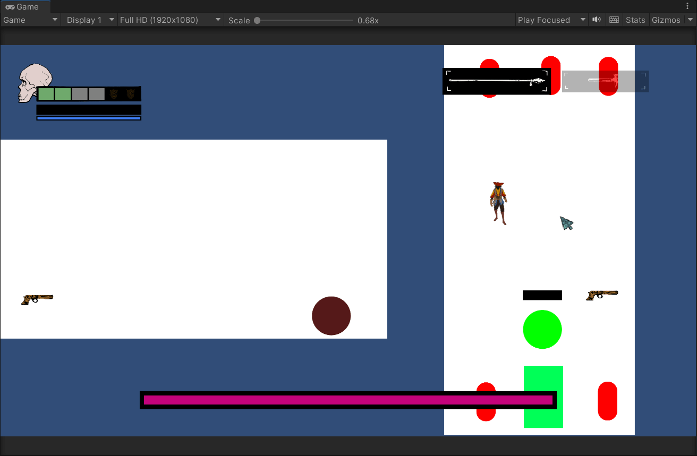
Week 7 - Sprint 2 QA:
| Category |
Time |
| Meetings and logistics: |
2 h |
| Documentation, planning, and testing: |
30 m |
| Development: |
5 h |
| Bugfixing: |
3 h 30 m |
| Total |
11 h |
This was the QA week for sprint 2, where I focused on improving existing features, such as the currency popup and enemy health bars.
Of note, the currency popup required some work as the initial implementation did not work as the Unity event invokation did not work correctly.
I would end up instead using an existing Eventbus event for callback for when there was a currecny gain event.
In addition, I also had to account for popup behavior for multiple currency gain events occuring concurrently (e.g. killing multiple enemies within a short time frame).
I ended up implementing a system where multiple instances that occured within a period of time would instead accumulate, and result in a single popup showing the accumulated gain.
The specific period of time was parameterized to allow for ease of testing of different values for designers.
My other big task for this week was to implement an "acquire" console command, which would allow for instant acquisition of the spear weapon, as well all the guns.
This was highly requested during the studio playtest session. There were some hiccups in testing this feature, mostly due to an issue in my testing scene as well as in missing player animations at the time.
The rest of the week's tasks consisted of mostly HUD and UI fixes, such as enemy health bars appearing below the level tilemap, the shop not stopping time when active,
the player attacking when clicking to exit the shop, as well as a reported bug for attacks not having a SFX when just swinging at the air.
I would break down the enemy health bars into cells, similar to the player health bar, at the request of design.
Screenshots:
New weapon UI:
Total time: 24 h
Week 8 - :
| Category |
Time |
| Meetings and logistics: |
3 h |
| Documentation, planning, and testing: |
1 h |
| Development: |
8 h 30 m |
| Total |
12 h 30 m |
Screenshots:
New weapon UI:
Total time: 24 h